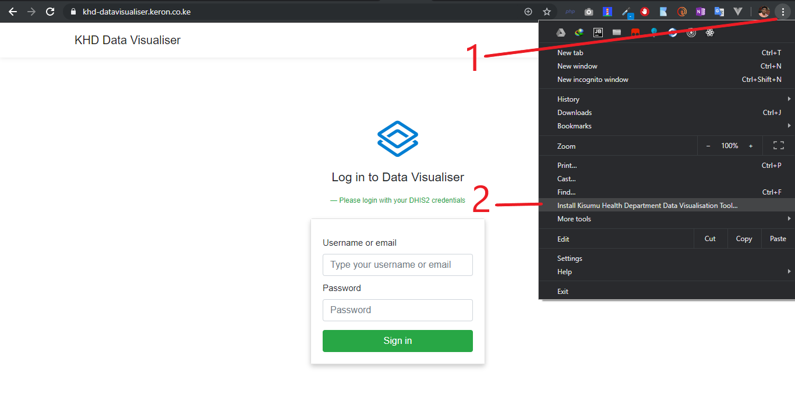

Kisumu Health Department Data Visualisation Tool
Documentation for Manually Created Charts
For DHIS2 Created Charts, kindly refer to this documentation here.
Table of contents
- About application
- Where to find the application
- Requirements to use the application
- Installability
- Using the application
About application
The Kisumu Health Department Data Visualisation Tool is a web based application that can be used to generate charts of indicators from DHIS2. In addition, charts can also be generated manually without the use of DHIS2 to form custom charts that can be printed and presented.
Where to find the application
The application can be found at https://khd-datavisualiser.keron.co.ke/manual where it is hosted and can be run right from the browser.
Requirements to use the application
The manual charts can be accessed even without logging in. You only need to access the link via a web browser.
Installability
The application can be installed on any device that supports an updated Google Chrome browser. This includes android phones, ios devices and PCS. This app can also be installed on safari browser as well as Microsoft Edge that runs on chromium.

How to install the application
Using the application
Landing Page
Home page for manual charts
Generating charts
Charts are generated in a few steps:
- Fill in the form with the indicator which will be the title for the chart.
- Fill in the values of each sub-county and county.
- Click on the green create chart button.
- The chart will be generated.
Adding Charts
To add a chart, simply click add chart at the top right.
Adding charts
After adding a chart simply follow the same procedure to generate a chart. To learn how to generate a chart, click here
Comparing Charts
To compare charts, simply tick the compare charts check box.(Step 1 as on the figure below) Ensure you have at least two charts to compare. After ticking the compare charts checkbox, generate the charts and then at the top, click the blue button indicating Compare charts (Step 2 as on the figure below) to bring the charts to compare close for comparison.
Comparing charts
Printing and downloading charts
Charts can be printed as well as images of the charts to be used elsewhere can be generated. To print, click the blue button indicated print (in the figure below, it is indicated as 1). To download, click the dark gray button and select the type of file to download.(in the figure below, it is indicated as 2)
Printing and downloading charts
Percentage Charts Generation
To generate percentage charts, simply tick the Percentage option on the chart, ensuring that values do not exceed one hundred for each value. After clicking and verifying no value is greater than 100 click the Green Create Chart button at the bottom of the form for each chart generated.
Generate Percentage charts toggle
This documentation is maintained by Karim K. Kanji